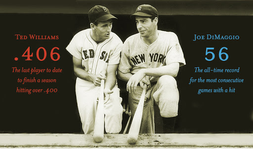
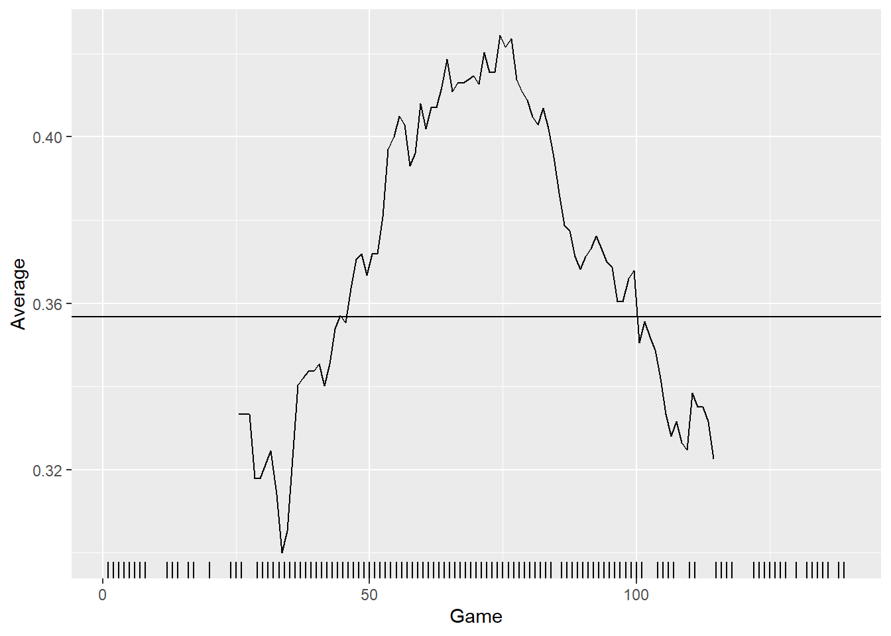
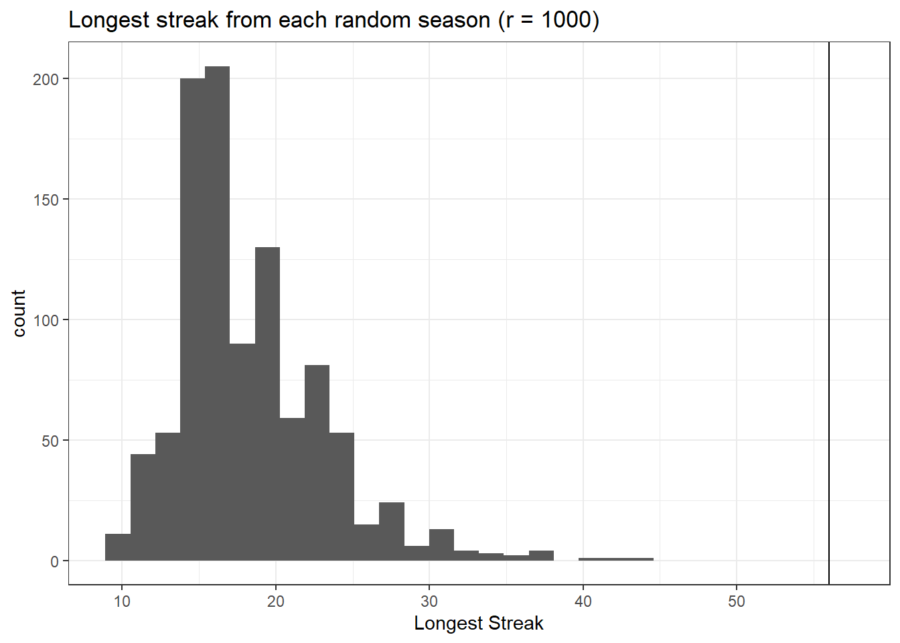

How does it improve upon the individual player trajectories?
What other applications can you think of for it?
DiMaggio’s Streak
In 1941, Joe DiMaggio of the New York Yankees got at least one hit in 56 straight games. The streak began on May 15th, 1941 when DiMaggio went 1-for-4 against the Chicago White Sox and ended on July 17th when he went 0-for-3 with a walk against the Cleveland Indians.

Ted Williams and Joe DiMaggio
The following example comes from Chapter 10 of Analyzing Baseball Data with R by Marchi, Albert, and Baumer.
library(tidyverse)library(knitr)library(baseballr)# Load the game-by-game records for DiMaggio's 1941 season.retro1941 <-retrosheet_data(years_to_acquire ='1941') |>pluck('1941') |>pluck('events')joe <- retro1941 |>filter(bat_id=='dimaj101', bat_event_fl) |>summarize(H=sum(h_fl>0), PA =n(),AB =sum(ab_fl),.by ='game_id') |>mutate(Opp =str_sub(game_id,1,3),Date =ymd(str_sub(game_id,4,11)),Game_tag =str_sub(game_id,-1)) |>arrange(Date)joe |>select(Date, Opp, PA, H) |>head(10)
# A tibble: 10 × 4
Date Opp PA H
<date> <chr> <int> <int>
1 1941-04-14 WS1 4 2
2 1941-04-15 NYA 4 2
3 1941-04-16 NYA 5 4
4 1941-04-17 NYA 5 2
5 1941-04-18 WS1 4 1
6 1941-04-19 WS1 5 1
7 1941-04-20 PHA 6 3
8 1941-04-21 PHA 6 4
9 1941-04-22 PHA 4 0
10 1941-04-23 NYA 5 0
Let’s add a variable indicating whether or not he got a hit in the game.
joe |>mutate(HIT =ifelse(H >0, 1,0),Rk =row_number()) -> joejoe |>count(HIT) |>kable(caption ="Number of games by whether DiMaggio got at least one hit (1) or not (0).")
Number of games by whether DiMaggio got at least one hit (1) or not (0).
HIT
n
0
25
1
114
Now we wish to calculate the lengths of any hit streaks.
# Create a function to calculate streaks.streaks <-function(y){ x <-rle(y)class(x) <-"list"return(as_tibble(x))}joe |>pull(HIT) |>streaks() |>filter(values ==1) |># focus only on hit streakspull(lengths)
[1] 8 3 2 1 3 56 16 4 2 4 7 1 5 2
Moving Average
How did Joe DiMaggio’s batting average vary over the course of the season? Let’s look at a 10-game moving (or rolling) average.
library(zoo)moving_average <-function(df, width){ N <-nrow(df) df |>transmute(Game =rollmean(1:N, k = width, fill =NA),Average =rollsum(H, width, fill =NA) /rollsum(AB, width, fill =NA))}joe_ma <-moving_average(joe, 50)joe_ma |>ggplot(aes(x = Game, y = Average)) +geom_line() +geom_hline(data =summarize(joe, bavg =sum(H) /sum(AB)),aes(yintercept = bavg)) +geom_rug(data =filter(joe, HIT ==1),aes(Rk, .3* HIT), sides ="b")

How unusual was DiMaggio’s streak for a player who hit safely in 114 of 139 games?
# A tibble: 1 × 8
PA AB H BA Games AB_per_game prob_H_in_game prob_56_straight_H
<int> <int> <int> <dbl> <int> <dbl> <dbl> <dbl>
1 247 223 91 0.408 56 3.98 0.876 0.000606
Here’s another approach using simulation.
For a player who hit safely in 114 of 139 games, let’s see how unusual it would be for him to have a streak of 56 or more consecutive games using simulation. The follow code shuffles the HIT column and returns the longest streak for each of r simulated seasons.
# This function shuffles the y vector and returns the longest streak.random_mix <-function(y){ y |>sample() |>streaks() |>filter(values ==1) |>arrange(-lengths) |>head(1) |>pull(lengths)}# Set the number of replications for the simulation.r =1000# Run a simulation experiment.# You can think of replication as a for loop.set.seed(388)joe_random <-replicate(r, random_mix(joe$HIT))sim_result <-tibble(streak_long = joe_random)sim_result |>ggplot(aes(x = streak_long)) +geom_histogram() +theme_bw() +labs(title =str_c("Longest streak from each random season (r = ",r,")"),x ="Longest Streak") +geom_vline(xintercept =56)

sum(joe_random >=56) / r
[1] 0
How do we interpret the graph above?
How should we interpret the probability we’ve just calculated?
Streakiness Statistic
How would you quantify a player’s streakiness? Does your favorite player get hot or go cold more than would be expected by random variation alone? Let’s come up with some ideas before we discuss it further next time.